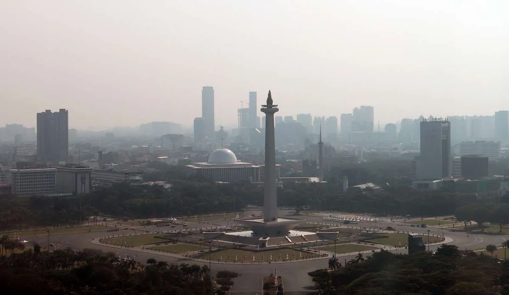
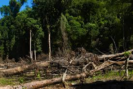
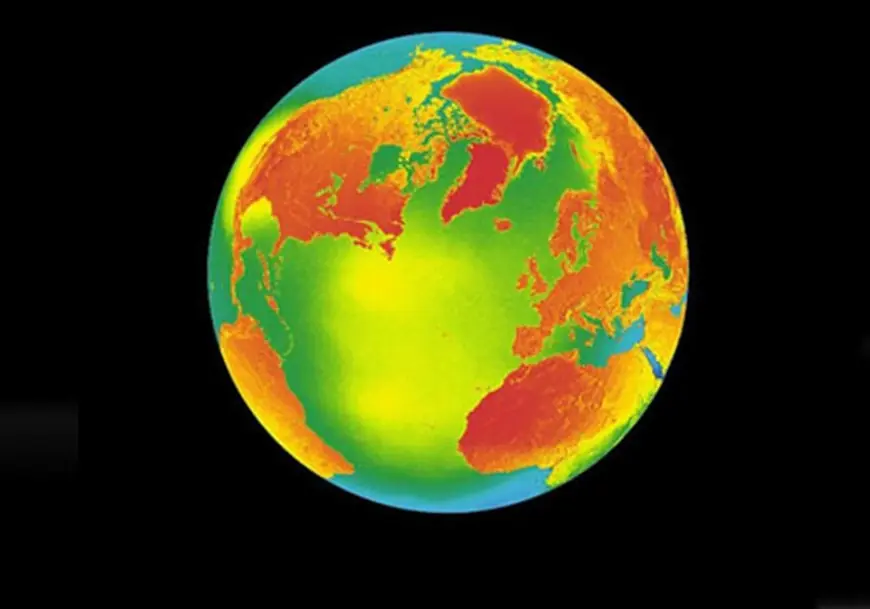
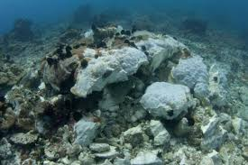

Dampak Jangka Panjang
Polusi udara berdampak merusak lingkungan baik secara langsung maupun tidak langsung karena dapat mengganggu keseimbangan ekosistem dan mengancam kelangsungan hidup flora serta fauna. Salah satu dampaknya adalah hujan asam yang terjadi ketika sulfur dioksida dan nitrogen oksida bereaksi dengan uap air di atmosfer, sehingga meningkatkan keasaman tanah dan perairan, merusak tanaman, serta membunuh biota air. Selain itu, emisi gas rumah kaca seperti karbon dioksida, metana, dan dinitrogen oksida menahan panas matahari di atmosfer dan memicu pemanasan global, yang menyebabkan perubahan iklim, cuaca ekstrem, serta pencairan es di kutub. Ozon di permukaan tanah dapat menghambat proses fotosintesis dan pertumbuhan tanaman, sementara partikel debu menutupi daun dan mengganggu siklus kehidupan tumbuhan.

Menggangu Keseimbangan Flora dan Fauna
Polusi dapat menghambat proses fotosintesis tanaman yang membuat tanaman tersebut layu. Banyak spesies juga akan terancam punah karena habitatnya tercemar.

Merusak Atmosfer
Polusi udara dapat merusak atmosfer karena zat-zat berbahaya yang mengganggu keseimbangan alami atmosfer bumi.

Pemanasan Global
Peningkatan suhu rata-rata bumi akibat menumpuknya gas rumah kaca di atmosfer, seperti karbon dioksida, metana, dan nitrogen oksida.

Kerusakan Ekosistem
Polusi terus-menerus merusak habitat alami dan menyebabkan kepunahan spesies, serta mengganggu rantai makanan dan produktivitas ekosistem.